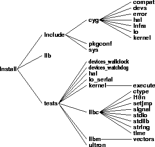

The install tree is the location for all files needed for application development. The libtarget.a library, which contains the custom-built eCos kernel and other components, is placed in the install tree, along with all packages’ public header files. If you build the tests, the test executable programs will also be placed in the install tree.
By default, the install tree is created by pkgconf.tcl in a subdirectory of the build tree called install. This can be modified with the --prefix option (see Chapter 7).
Figure 4-3. Install tree

The install tree is where the custom-built libtarget.a library, which contains the eCos kernel and other components, is located. The install tree is also the location for all the header files that are part of a published interface for their component.
Recompiling can replace libtarget.a and the test executables.
Never.
User application source or binary code should not go in the install tree.
The library containing the kernel and other components.
The header file for the kernel C language API.
The C library header file for standard I/O.